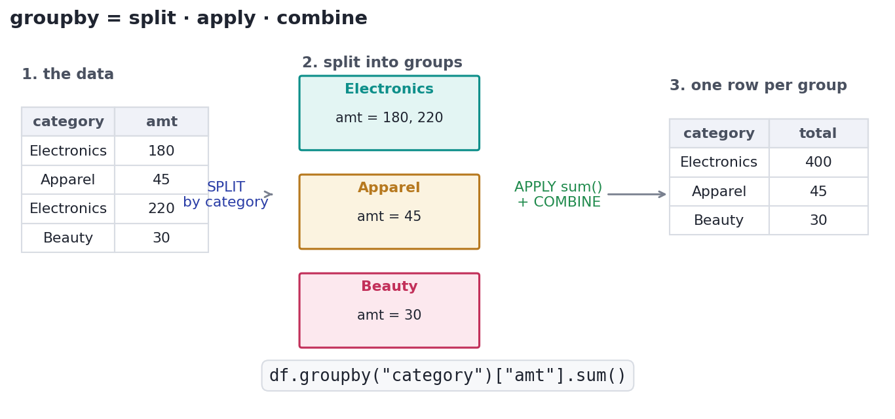

Aggregating with GROUP BY
Turn millions of rows into one number per group: COUNT, SUM, AVG, and HAVING.
You will constantly be asked questions that begin with "how many", "what's the total", or "what's the average … per …": revenue per category, orders per customer, signups per country per week. Answering them means collapsing many rows into one number per group — and that is exactly what GROUP BY does. It is the single most useful pattern in analytics SQL, and the engine behind every dashboard you have ever seen. Master it and you can turn a million-row table into the two-line summary a decision actually needs.
ConceptFirst, aggregate the whole table
An aggregate function takes many rows and returns one value. The five you will use every day are COUNT (how many), SUM (total), AVG (mean), MIN, and MAX. Applied with no grouping, they summarise the entire table at once. One subtlety to notice up front: COUNT(*) counts rows, while COUNT(amount) counts only rows where amount is not NULL — and SUM/AVG also quietly skip NULLs. Our table has one order with a missing amount, so watch those two counts disagree:
import sqlite3
db = sqlite3.connect(":memory:")
db.executescript("""
CREATE TABLE orders (
id INTEGER, customer TEXT, category TEXT, amount REAL, country TEXT
);
INSERT INTO orders VALUES
(101,'Ada', 'Electronics',240,'US'),
(102,'Blake','Apparel', 45,'US'),
(103,'Chen', 'Electronics',220,'CA'),
(104,'Diego','Home', 130,'MX'),
(105,'Ada', 'Apparel', 190,'US'),
(106,'Priya','Electronics',510,'CA'),
(107,'Blake','Home', 160,'US'),
(108,'Chen', 'Electronics',300,'US'),
(109,'Sara', 'Apparel', NULL,'CA');
""")
def run(sql):
cur = db.execute(sql)
cols = [c[0] for c in cur.description]
rows = cur.fetchall()
cell = lambda v: "NULL" if v is None else str(v)
w = [max(len(cell(v)) for v in [col, *(r[i] for r in rows)]) for i, col in enumerate(cols)]
show = lambda vals: " ".join(cell(v).ljust(w[i]) for i, v in enumerate(vals))
print(show(cols)); print(show(["-"*n for n in w]))
for r in rows: print(show(r))
run("""
SELECT COUNT(*) AS n_rows,
COUNT(amount) AS n_with_amount,
SUM(amount) AS total,
ROUND(AVG(amount),2) AS avg_amount,
MIN(amount) AS smallest,
MAX(amount) AS largest
FROM orders
""")n_rows n_with_amount total avg_amount smallest largest ------ ------------- ------ ---------- -------- ------- 9 8 1795.0 224.38 45.0 510.0
There are 9 rows but only 8 have an amount, so COUNT(*) and COUNT(amount) differ by one. The average is the total divided by 8, not 9 — NULLs were left out, not treated as zero. That distinction (skip vs. treat-as-zero) changes the answer, and interviewers love to probe it.
Concept · the core moveGROUP BY: one row per group
GROUP BY splits the rows into groups that share a value, runs the aggregate inside each group, and returns one row per group. SELECT category, SUM(amount) FROM orders GROUP BY category gives you the revenue of each category. The rule that keeps beginners honest: every column in your SELECT must either be in the GROUP BY or wrapped in an aggregate — anything else is ambiguous (which row's value would it show?). Here is revenue and order count per category, biggest first:
import sqlite3
db = sqlite3.connect(":memory:")
db.executescript("""
CREATE TABLE orders (
id INTEGER, customer TEXT, category TEXT, amount REAL, country TEXT
);
INSERT INTO orders VALUES
(101,'Ada', 'Electronics',240,'US'),
(102,'Blake','Apparel', 45,'US'),
(103,'Chen', 'Electronics',220,'CA'),
(104,'Diego','Home', 130,'MX'),
(105,'Ada', 'Apparel', 190,'US'),
(106,'Priya','Electronics',510,'CA'),
(107,'Blake','Home', 160,'US'),
(108,'Chen', 'Electronics',300,'US'),
(109,'Sara', 'Apparel', NULL,'CA');
""")
def run(sql):
cur = db.execute(sql)
cols = [c[0] for c in cur.description]
rows = cur.fetchall()
cell = lambda v: "NULL" if v is None else str(v)
w = [max(len(cell(v)) for v in [col, *(r[i] for r in rows)]) for i, col in enumerate(cols)]
show = lambda vals: " ".join(cell(v).ljust(w[i]) for i, v in enumerate(vals))
print(show(cols)); print(show(["-"*n for n in w]))
for r in rows: print(show(r))
run("""
SELECT category,
COUNT(*) AS orders,
SUM(amount) AS revenue,
ROUND(AVG(amount),1) AS avg_order
FROM orders
GROUP BY category
ORDER BY revenue DESC
""")category orders revenue avg_order ----------- ------ ------- --------- Electronics 4 1270.0 317.5 Home 2 290.0 145.0 Apparel 3 235.0 117.5

GROUP BY. SQL splits the rows into groups by your key, applies the aggregate to each group, and combines the results into one row per group. (The picture shows it with pandas' groupby, but the idea is identical — GROUP BY category is the SQL spelling of exactly this.)ConceptWHERE vs HAVING: filter rows, then filter groups
There are two different places to filter, and mixing them up is a top interview mistake. WHERE removes rows before grouping. HAVING removes groups after the aggregate is computed. So "only US orders" is a WHERE (it's about individual rows); "only categories whose total revenue exceeds 400" is a HAVING (it's about a group's aggregate). You can use both at once, and often do:
import sqlite3
db = sqlite3.connect(":memory:")
db.executescript("""
CREATE TABLE orders (
id INTEGER, customer TEXT, category TEXT, amount REAL, country TEXT
);
INSERT INTO orders VALUES
(101,'Ada', 'Electronics',240,'US'),
(102,'Blake','Apparel', 45,'US'),
(103,'Chen', 'Electronics',220,'CA'),
(104,'Diego','Home', 130,'MX'),
(105,'Ada', 'Apparel', 190,'US'),
(106,'Priya','Electronics',510,'CA'),
(107,'Blake','Home', 160,'US'),
(108,'Chen', 'Electronics',300,'US'),
(109,'Sara', 'Apparel', NULL,'CA');
""")
def run(sql):
cur = db.execute(sql)
cols = [c[0] for c in cur.description]
rows = cur.fetchall()
cell = lambda v: "NULL" if v is None else str(v)
w = [max(len(cell(v)) for v in [col, *(r[i] for r in rows)]) for i, col in enumerate(cols)]
show = lambda vals: " ".join(cell(v).ljust(w[i]) for i, v in enumerate(vals))
print(show(cols)); print(show(["-"*n for n in w]))
for r in rows: print(show(r))
run("""
SELECT category,
SUM(amount) AS us_revenue
FROM orders
WHERE country = 'US' -- rows first: keep only US orders
GROUP BY category
HAVING SUM(amount) > 200 -- then groups: keep big-revenue categories
ORDER BY us_revenue DESC
""")category us_revenue ----------- ---------- Electronics 540.0 Apparel 235.0
A quick test for which clause to use: if the condition could be checked on a single raw row (a country, a date, a status), it belongs in WHERE. If it needs a group's aggregate (a SUM, a COUNT, an AVG), it belongs in HAVING. WHERE runs first and is also faster, so filter rows there whenever you can.
Interactive labYour turn — aggregate it yourself
Return each category with its number of orders and total revenue, highest revenue first. Name the columns category, orders, revenue.
GROUP BY category, then COUNT(*) and SUM(amount). Sort with ORDER BY revenue DESC.SELECT category, COUNT(*) AS orders, SUM(amount) AS revenue FROM orders GROUP BY category ORDER BY revenue DESCNow filter the groups: return only the countries whose total revenue is above 400, with that total as revenue. Which clause filters a group total?
SUM(amount) is about a group, so it belongs in HAVING, not WHERE.SELECT country, SUM(amount) AS revenue FROM orders GROUP BY country HAVING SUM(amount) > 400 ORDER BY revenue DESCHAVING SUM(amount) > 400 runs after grouping; WHERE couldn't see the total at all.
★ Key points to remember
- An aggregate (
COUNT,SUM,AVG,MIN,MAX) turns many rows into one number. COUNT(*)counts rows;COUNT(col)counts non-NULL values;SUM/AVGskip NULLs (they are not treated as 0).- GROUP BY = one result row per group. Every selected column must be in the
GROUP BYor inside an aggregate. - WHERE filters rows before grouping; HAVING filters groups after aggregating. Use both together freely.
- This is split · apply · combine — the same idea as pandas
groupby.
amount column is NULL for 10 of them. What does SELECT COUNT(*), COUNT(amount), AVG(amount) FROM t tell you?SELECT customer, category, SUM(amount) FROM orders GROUP BY customer errors or misbehaves in strict SQL. Why?category is neither grouped nor aggregated, so which category to show is ambiguous◆ Practice▸
orders(customer, category, amount, country), write a query giving each country its number of orders and total revenue, highest-revenue country first.Show solution & reasoning
SELECT country, COUNT(*) AS orders, SUM(amount) AS revenue FROM orders GROUP BY country ORDER BY revenue DESC; — group by the country column, count rows and sum amount within each group, then sort the groups by their total.
Show solution & reasoning
SELECT customer, COUNT(*) AS n FROM orders GROUP BY customer HAVING COUNT(*) > 1 ORDER BY n DESC; — the "more than one" test is on a group's count, so it goes in HAVING, not WHERE. (WHERE couldn't see COUNT(*) at all.)
◎ Deep dive: execution order, the three COUNTs, and multi-key / NULL grouping▸
The execution order explains the rules. SQL runs the clauses as FROM → WHERE → GROUP BY → HAVING → SELECT → ORDER BY. That single fact answers most "why can't I …" questions: WHERE can't use an aggregate (aggregates don't exist until GROUP BY runs, which is after WHERE); HAVING can (it runs after); and a column alias you define in SELECT isn't usable in WHERE or GROUP BY (they ran earlier) but usually is usable in ORDER BY (which runs last).
The three COUNTs. COUNT(*) counts rows. COUNT(col) counts rows where col is non-NULL — handy for "how many orders actually have a recorded amount?" COUNT(DISTINCT col) counts distinct non-NULL values — "how many different categories does this customer buy?" Choosing the wrong one silently changes the number, so name to yourself which of the three a question is really asking.
Grouping by more than one key, and grouping NULLs. GROUP BY country, category makes one row per (country, category) pair — a two-dimensional summary, the basis of a pivot table. And note that GROUP BY puts all NULLs into a single group (SQL treats them as "the same unknown" here, an exception to the usual rule that NULL never equals NULL). So a grouped result can contain a NULL group — often exactly the "missing / unset" bucket you want to inspect.
The classic prompt is "difference between WHERE and HAVING?" — WHERE filters rows before grouping, HAVING filters groups after aggregating, and you can't put an aggregate in WHERE because of execution order. Pair that with knowing COUNT(*) vs COUNT(col) vs COUNT(DISTINCT col) and you'll handle the aggregation portion of any SQL screen cleanly.